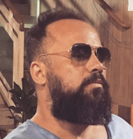

Banco de Questões para Professores
Escolha o assunto, a série e a dificuldade. Baixe a prova em Word, com gabarito separado, pronta para imprimir ou ajustar do seu jeito.
Quero ser professor fundador30 dias grátis · Sem cartão para começar · Cancele quando quiser
Todo professor conhece essa rotina. O fim de semana vai embora procurando questão, formatando no Word e conferindo gabarito.
Abrir dez PDFs, copiar, colar, consertar fórmula que quebrou… só para montar uma lista.
Figura desalinhada, numeração errada, alternativa pulando de página. Tempo que deveria ser seu.
Prova A, prova B, recuperação, lista extra. O mesmo trabalho, várias vezes por bimestre.
Simples de verdade. Se você usa o Word, já sabe usar o Banco de Questões Exata.
Escolha disciplina, série, assunto, dificuldade e tipo de questão.
Veja as questões com fórmulas e figuras e marque as que quiser na sua prova.
Receba a prova em Word, com o gabarito em arquivo separado. Edite à vontade e imprima.
Um acervo organizado por quem está em sala de aula todos os dias.

Dou aulas de Matemática e Física desde 1997, do Ensino Médio às disciplinas de Cálculo e Física nos cursos de Engenharia.
Criei este banco porque eu também perdia horas montando provas. Hoje uso ele nas minhas próprias turmas, e quero abrir para colegas que vivem a mesma rotina.
Estou abrindo o banco para um grupo pequeno de professores antes do lançamento oficial. Quem entrar agora ajuda a construir a ferramenta e garante condições que não voltarão a ser oferecidas.
30 dias grátis para testar à vontade
preço congelado para sempre enquanto você for assinante
Em troca, peço só uma coisa: que você me conte o que funcionou e o que faltou.
Não. Tudo funciona pelo navegador, no computador ou no notebook. As provas são baixadas em Word (.docx), que você abre normalmente.
Sim. O arquivo é um Word comum: você pode mudar o cabeçalho, trocar o nome da escola, ajustar valores e reorganizar as questões.
Matemática do 1º ao 3º ano do Ensino Médio e questões de Física. Novos assuntos entram todo mês, e os fundadores ajudam a escolher as prioridades.
Não. Os 30 dias de teste são gratuitos e sem cartão. Só no fim do teste você decide se quer continuar com o plano fundador.
É só não continuar depois do teste. E, se continuar, pode cancelar quando quiser, sem multa e sem fidelidade.
Sim. A assinatura é sua, não da escola. Use em todas as turmas e escolas em que você dá aula.
Deixe a parte cansativa com o Banco de Questões Exata e use seu tempo para o que importa de verdade: ensinar.
Garantir minha vaga de fundador